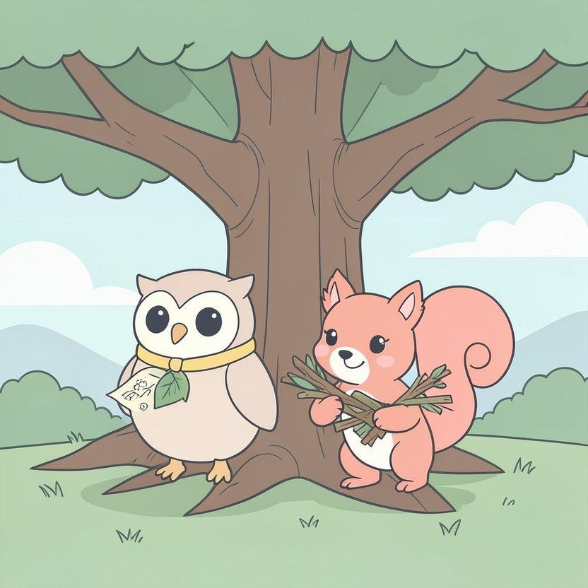

Titistoire › Les Étoiles (3-6 ans)
Plume, Noisette et la cabane coupée en deux
Une histoire de Plume la chouette pour parler de : se réconcilier.

▶ Écouter et regarder l'histoire
Gratuit, sans inscription : la voix lit, le texte suit mot à mot, les images tournent comme dans un album.
Le texte de l'histoire
Dans la forêt des Quatre-Chênes, Plume la chouette et Noisette l'écureuil sont amies depuis toujours. Depuis bien avant de savoir voler pour l'une, et grimper pour l'autre.
Cet été, elles ont un grand projet : bâtir la plus belle cabane de la forêt, tout là-haut dans le vieux chêne. Noisette grimpe, les bras chargés de branches. Plume dessine les plans.
Du matin au soir, elles s'affairent. Elles ont même un mot de passe secret : « Carabistouille ! » Rien que de le prononcer, elles pouffent, elles gloussent, elles en ont mal au ventre.
Un jour, la cabane est presque finie. Il n'y manque plus que le drapeau. « On met une feuille rouge, décide Plume. C'était mon idée, la cabane. »
« Ton idée ? s'indigne Noisette. C'est moi qui ai porté toutes les branches ! On met une plume de geai, bleue comme le ciel. » « Mon idée ! » « Mes branches ! »
Chacune tire de son côté. Crac. Le bâton se brise net. « T'es plus ma copine ! » « Toi non plus ! » C'est sorti si vite que les mots restent suspendus en l'air, entre elles, tout étonnés.
Noisette trace un trait blanc par terre, en plein milieu de la cabane. « Ça, c'est mon côté. » « Très bien, réplique Plume en croisant les ailes. Et ça, c'est le mien. Tu n'as pas le droit de regarder par ma fenêtre. »
Les voilà plantées face à face, chacune dans sa moitié, sans un mot. Plume a les plans, mais plus de branches. Noisette a les branches, mais plus de plans.
Le premier jour, elles boudent à merveille, menton levé, joues gonflées. C'est même assez agréable, de bouder. Au début.
Le deuxième jour, Plume aperçoit un escargot coiffé d'un champignon, comme d'un petit chapeau. Vite, elle se retourne pour le raconter à Noisette… Ah non. C'est vrai.
De l'autre côté du trait, Noisette déniche une noisette en forme de cœur. Elle se tourne à demi, ouvre la bouche… et la referme.
C'est fou tout ce qu'on a à raconter à quelqu'un, quand on ne lui parle plus.
« C'est à elle de dire pardon, rumine Plume à sa fenêtre. C'est elle qui a crié la première. » « C'est à elle de dire pardon, rumine Noisette à la sienne. C'est elle qui a commencé. »
La vieille tortue Mathurine passe par là, à tout petits pas. Elle lève le nez. « Tiens ! Deux demi-cabanes. Et deux demi-sourires. Quel dommage, ça faisait un entier. »
Plume fait mine de ne rien entendre. Mais elle y pense toute la nuit, les yeux grands ouverts.
Le troisième jour, il se met à pleuvoir. Une grosse pluie d'été, qui tambourine sur les feuilles. Le toit n'est fini qu'à moitié de chaque côté. Ploc, ça goutte sur Plume. Ploc, ça goutte sur Noisette.
Plume grelotte. À ses pieds, le trait blanc fond en petites flaques : la pluie est en train de l'effacer. Alors elle regarde le dos de Noisette, tout mouillé, tout petit.
Dire pardon en premier, c'est comme sauter dans l'eau froide. On a peur avant. Plume prend une grande inspiration et tend une aile. « Noisette… Carabistouille ? »
Noisette se retourne d'un bond. Ses moustaches tremblotent. « Carabistouille », répond-elle dans un souffle. Et les voilà qui éclatent de rire, avec quelques larmes aussi, mais sous la pluie ça ne se voit pas.
« Pardon. C'étaient tes branches. » « Pardon. C'était ton idée. » Front contre front, elles murmurent d'une seule voix : « C'était notre cabane. »
Noisette tient les branches. Plume montre où les poser. En dix minutes, le toit est terminé. Plus une goutte ne passe : on est au sec, bien à l'abri.
Quand le soleil revient, et un arc-en-ciel avec lui, elles hissent le drapeau. Une feuille rouge et une plume de geai, nouées ensemble. C'est beaucoup plus joli.
Du trait par terre, il ne reste rien. Juste, à cet endroit-là, une trace minuscule que personne d'autre ne remarque. Elles, si.
Elles se chamaillent encore, bien sûr. Pour une myrtille, pour une chanson, pour savoir qui a vu l'escargot en premier. Mais plus jamais trois jours. Trois jours, c'est beaucoup trop long sans dire « Carabistouille ».